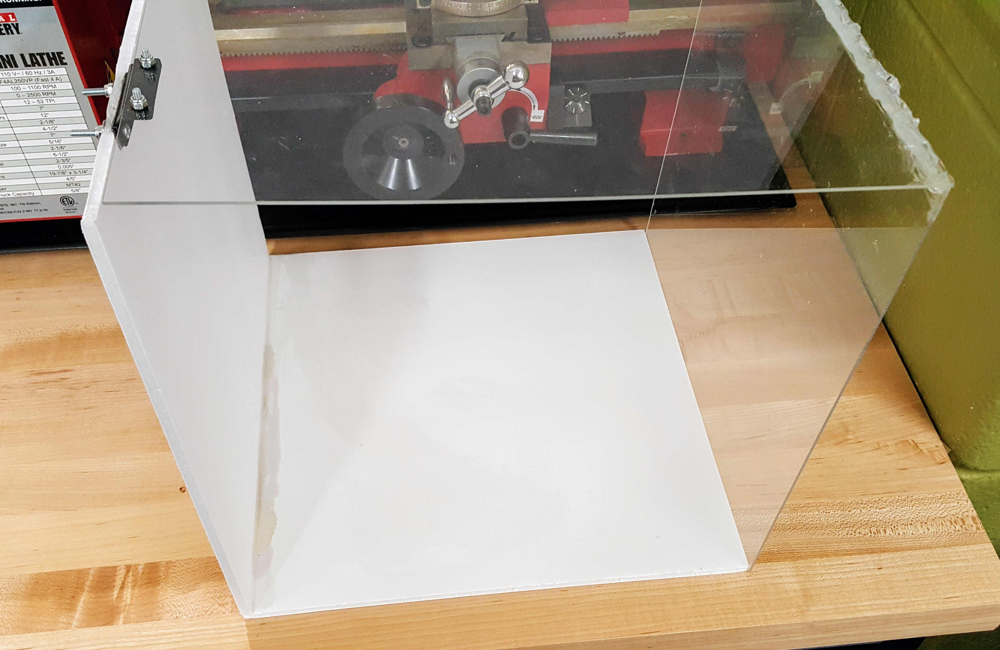
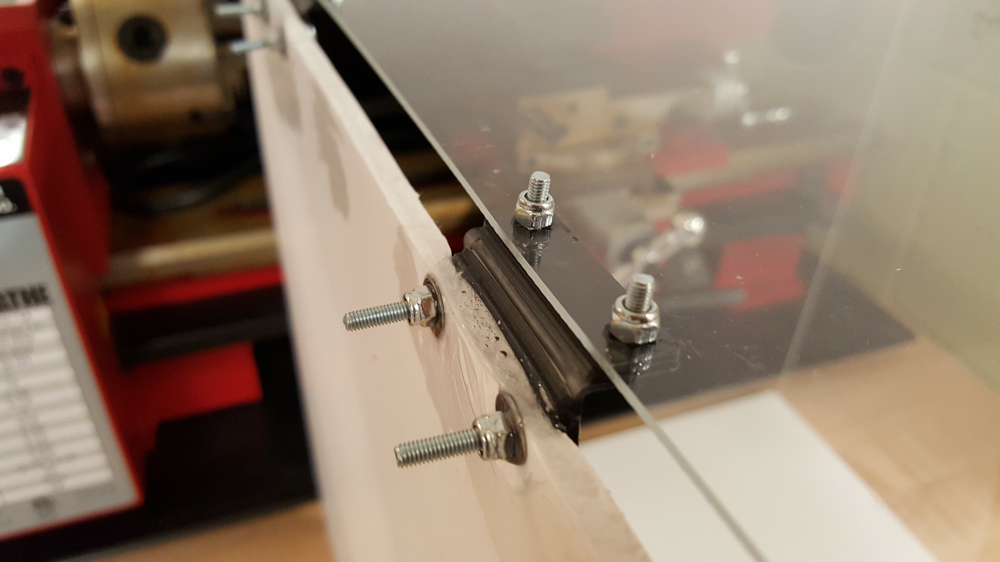

stumbling into aerodynamics
Home Posts About Me
This section is where all the important interaction with the wind tunnel goes on. This is where the model is placed and where the measurements of the body in the tunnel will be taken.
To build the test section, I used 24" x 12" of acrylic and 24" x 12" of foam. The acrylic was cut in a tooth pattern to aid adhesion at the 90 degree angle joint.

The test section is designed to have two clear faces and two foam faces. The foam provides a rigid structure while the acrlic allows for viewing of the test subject. The test subject needs to be able to be taken out of the tunnel easily, so the entirety of the acrylic faces are attached with a hinge to the rest of the tunnel.

The hinge works as it does above. The hinge is a plastic hinge attached with bolts to the acrylic and foam. The bolts through the foam are stabilied by washers on either side and by epoxy which soaks through the foam and strengthens it.

--Aryn Harmon